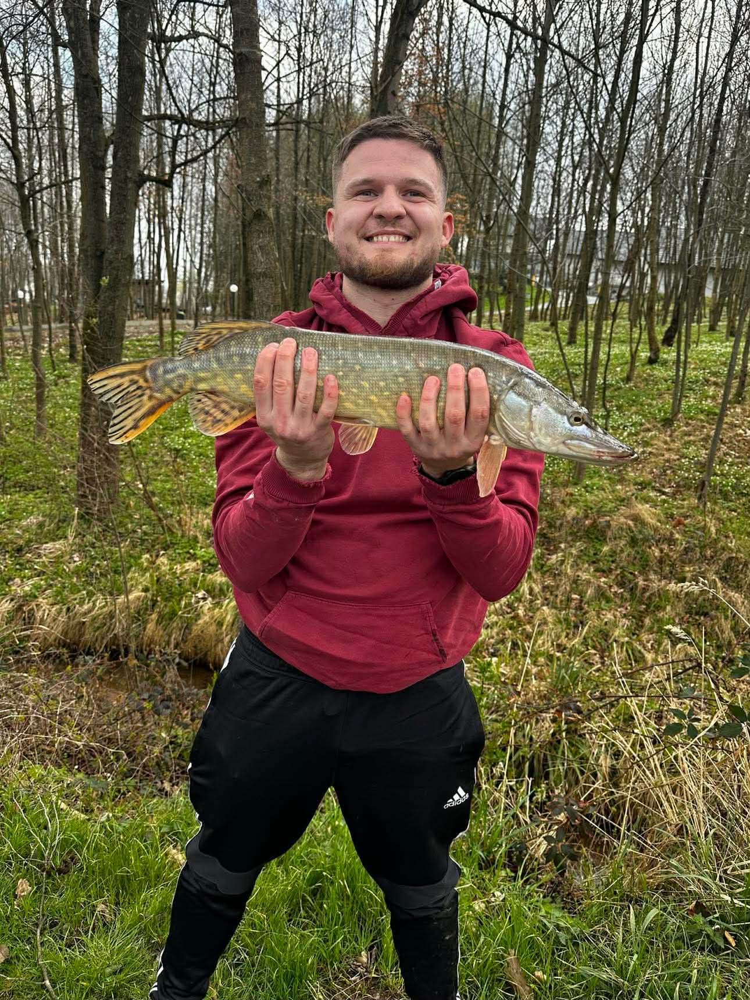
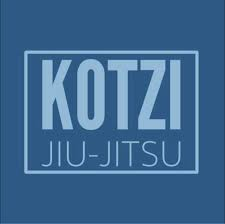
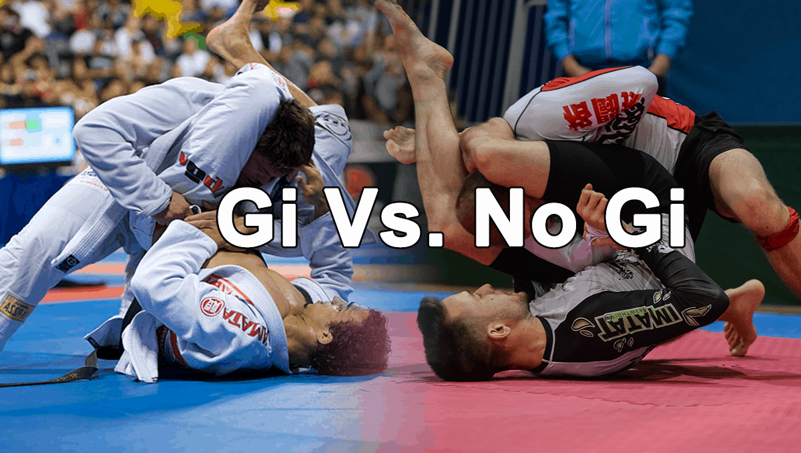
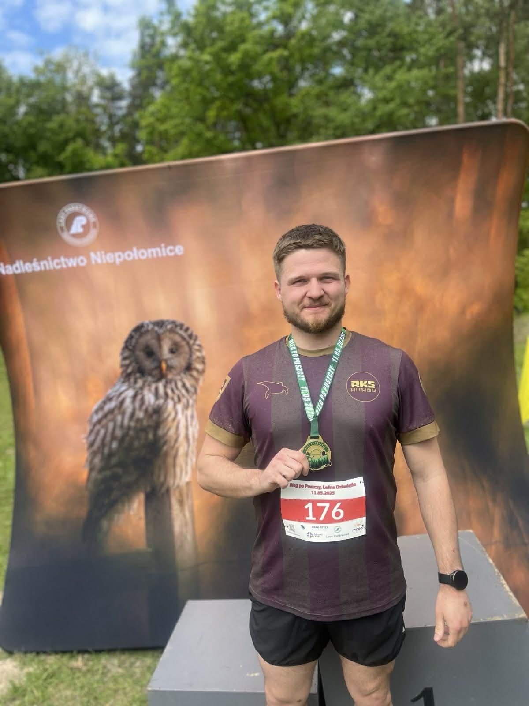
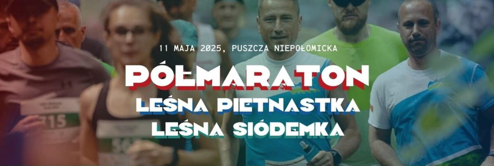

Wędkarstwo – cisza, spokój i własny połów

Swoją przygodę z ju jitsu rozpocząłem około 1,5 roku temu w Niepołomicach. Trenuję w klubie Kotzi Ju Jitsu, działającym przy PTG Sokół Niepołomice. Od pierwszego treningu wiedziałem, że to coś dla mnie – sport, który uczy dyscypliny, kontroli nad ciałem i głową, a przy tym daje ogromną satysfakcję. Regularne treningi stały się ważną częścią mojej rutyny i sposobem na ciągły rozwój. Treningi odbywają się zarówno w formule Gi, jak i No Gi, jednak z czasem to właśnie No Gi stało się moim głównym wyborem. Bardziej dynamiczny charakter walki, brak chwytów za kimono oraz większy nacisk na pracę ciałem i szybkość sprawiają, że ta forma daje mi jeszcze więcej frajdy i lepiej odpowiada mojemu stylowi.
 Bieganie zaczęło się trochę spontanicznie – po przesłuchaniu jednego z podcastów u Joe Rogana złapałem zajawkę i postanowiłem sprawdzić siebie. Zapisałem się na półmaraton i przebiegłem go w Niepołomicach, przez Puszczę Niepołomicką, z czasem 2 godziny 17 minut. To doświadczenie pokazało mi, że konsekwencja i regularna praca naprawdę działają.
 